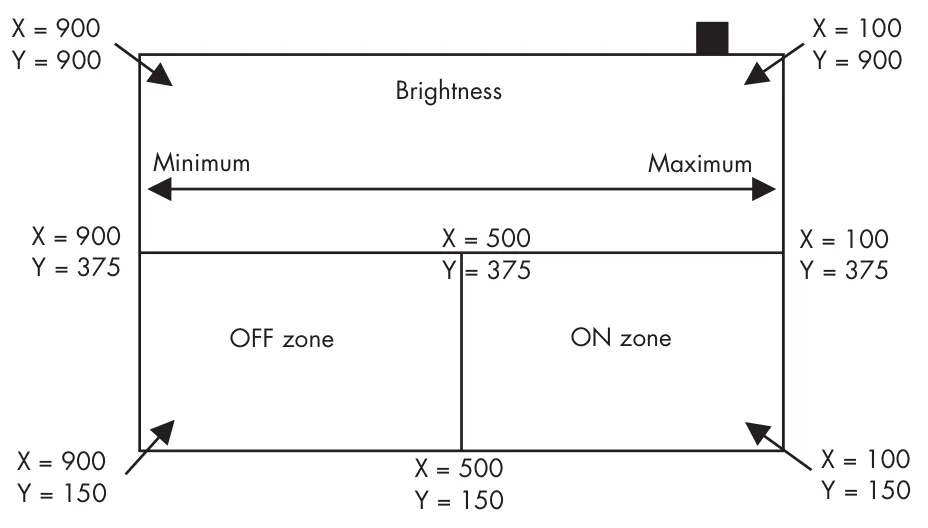

In this project we’ll create a three-zone touch switch for an LED on digital pin 3 that turns the LED on or off and adjusts the brightness using PWM (Chapter 3).
The Touchscreen Map
Our touchscreen map is shown in Figure 10-7.

The touchscreen map is divided into “off” and “on” zones and a “brightness” control zone. We measure the values returned by the touchscreen to determine which part has been touched and then act accordingly.
The Sketch
Enter and upload the following sketch:
// Project 36 - Creating a Three-Zone Touch Switch
int x,y = 0;
void setup()
{
pinMode(3, OUTPUT);
}
void switchOn()
{
digitalWrite(3, HIGH);
delay(200);
}
void switchOff()
{
digitalWrite(3, LOW);
delay(200);
}
void setBrightness()
{
int xx, bright;
float br;
xx=x-100;
❶ br=(800-xx)/255;
bright=int(br);
analogWrite(3, bright);
}
int readX() // returns the value of the touchscreen's x-axis
{
int xr=0;
pinMode(A0, INPUT);
pinMode(A1, OUTPUT);
pinMode(A2, INPUT);
pinMode(A3, OUTPUT);
digitalWrite(A1, LOW); // set A1 to GND
digitalWrite(A3, HIGH); // set A3 as 5V
delay(5);
xr=analogRead(0);
return xr;
}
int readY() // returns the value of the touchscreen's y-axis
{
int yr=0;
pinMode(A0, OUTPUT); // A0
pinMode(A1, INPUT); // A1
pinMode(A2, OUTPUT); // A2
pinMode(A3, INPUT); // A3
digitalWrite(A0, LOW); // set A0 to GND
digitalWrite(A2, HIGH); // set A2 as 5V
delay(5);
yr=analogRead(1);
return yr;
}
void loop()
{
x=readX();
y=readY();
// test for ON
❷ if (x<=500 && x>=100 && y>= 150 && y<375)
{
switchOn();
}
// test for OFF
❸ if (x>500 && x<=900 && y>= 150 && y<375)
{
switchOff();
}
// test for brightness
❹ if (y>=375 && y<=900)
{
setBrightness();
}
}How It Works
As with the sketch for the two-zone map, this sketch will check for touches in the “on” and “off” zones (which are now smaller) at ❷ and ❸ and for any touches above the horizontal divider, which we’ll use to determine brightness at ❹. If the screen is touched in the brightness area, the position on the x-axis is converted to a relative value for PWM at ❶ and the LED is adjusted accordingly using the function setBrightness().
You can use these same basic functions to create any number of switches or sliders with this simple and inexpensive touchscreen.